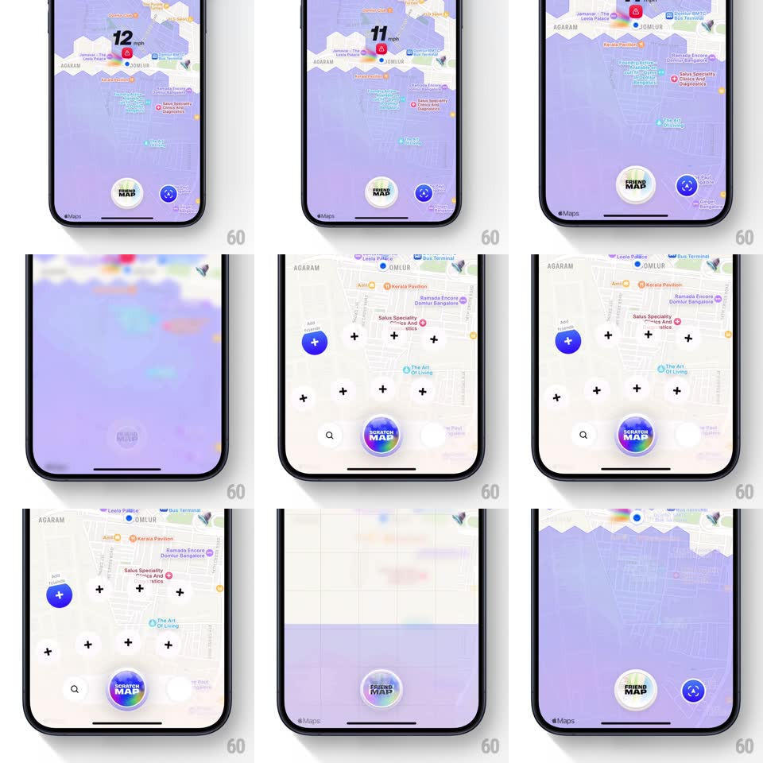

Media
Frame-by-frame

Rebuild this interaction 1:1: Bump's map-mode switch - tapping the circular mode button spins it 180deg while it morphs between "FRIEND MAP" and "SCRATCH MAP" faces, the map's fog layer lifts with a zigzag tear, and new mode elements (plus markers, search field) stagger onto the map.

Rebuild this interaction 1:1: Bump's map-mode switch - tapping the circular mode button spins it 180deg while it morphs between "FRIEND MAP" and "SCRATCH MAP" faces, the map's fog layer lifts with a zigzag tear, and new mode elements (plus markers, search field) stagger onto the map. ## Integration Integration: stack-agnostic spec - springs given as stiffness/damping, timed motions as duration + curve; map every value to your framework and animation library of choice. ## Scene Full-screen map (Bangalore area). Friend mode: purple fog covers the map except a cleared top region, a "12 mph" speed pill, and the circular "FRIEND MAP" button bottom-center with a blue action button beside it. Scratch mode: light map with scattered black plus markers, a blue FAB, a search field, and the button now reading "SCRATCH MAP" in rainbow gradient. ## Motion spec Pattern: mode toggle - button coin-flip plus staged content swap. - The mode button spins 180deg on its Y-axis (~450ms, ease-in-out); its face crossfades from "FRIEND MAP" (white) to "SCRATCH MAP" (gradient) at the 90deg point. - The purple fog lifts upward with a jagged zigzag bottom edge (~500ms, ease-in), revealing the light map underneath. - Mode elements stagger in: plus markers pop at scattered positions (scale 0 -> 1, spring ~400/20, 30ms stagger), then the blue FAB and search field slide up (translateY 20px -> 0, 250ms). - Reverse applies the same beats in mirror: elements stagger out, fog wipes down, button spins back. ## Calibration - The button flip and the fog lift start together; content stagger begins only as the fog clears. - The fog's zigzag edge is the signature - a straight wipe loses the scratch-card feel. ## Reduced motion Fog crossfades (250ms), button face swaps without spin, markers appear without stagger. ## Don't miss - The two button faces use different label styling (plain dark text vs rainbow gradient). - Plus markers are placed at fixed map coordinates, not randomly per render.